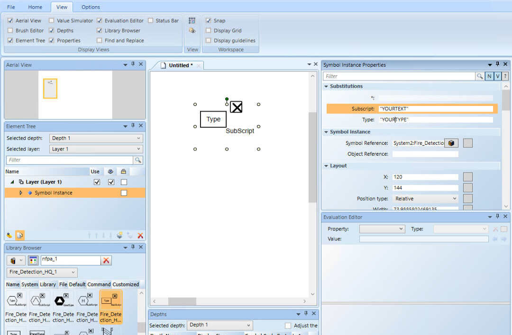
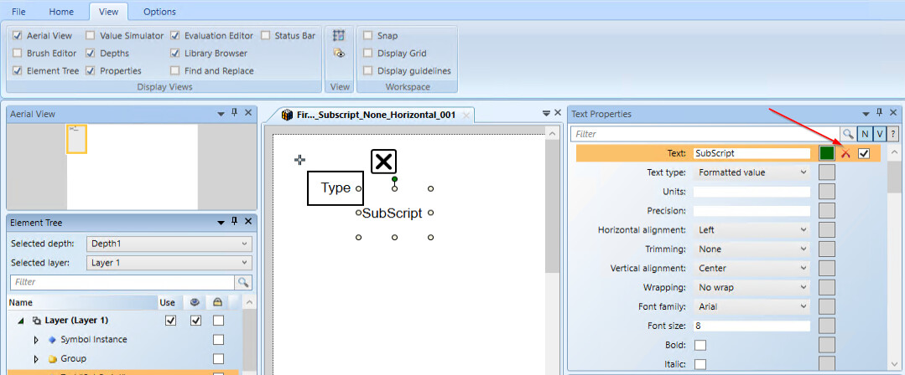

Configuring NFPA_170 Symbols
Scenario: You want to configure and control the NFPA_170 symbols provided in the software libraries.
- You opened a graphic to edit in Engineering mode.
- You know how to create a graphical command.
- In the Graphic Editor, in the View tab, select the Properties and Library Browser panes.
- In Library Browser, select the Fire Detection and Voice libraries.
- The NFPA_170 symbols appear in the preview area of the pane.
- Some symbols are named Configurable. Configurable symbols allow you to customize them by adding specific text, such as the name of a device or panel and, optionally, its subscript. When entering custom text, ensure you enclose the text within quotation marks.

- For specific symbol types like Horn, Speakers, Strobes, and Visual Indicators, you can also customize their Wattage and Candela values where applicable.
- (Optional)If you need to reuse a configurable element multiple times, it is recommended to proceed as follows:
- Replace the customizable elements with fixed elements in the symbol editor.
- Delete the customization.
- Save the symbol as a new one
- Click Save
 to save the graphic.
to save the graphic. - Repeat this procedure to add more NFPA_170 symbols as necessary.
- In System Browser, deselect the Manual Navigation check box.